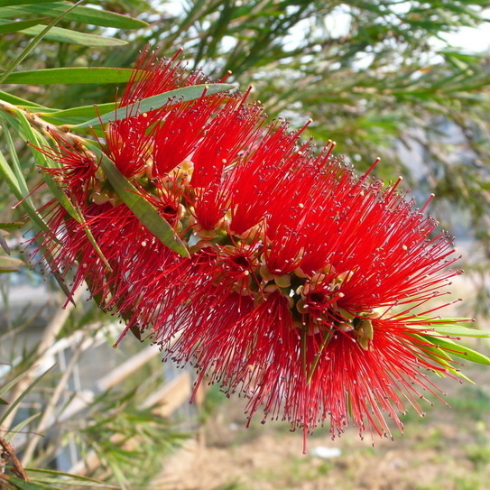

-
紅瓶刷子樹
學名：Callistemon rigidus
-
校園分布：
學士班宿舍與研究生宿舍間草地、地環系南側
-
開花月份：
1月 - 4月(Jan - Apr)
植物簡介
產於澳洲的新南威爾斯州近海岸區於，於1910年由新加坡引進台灣，常綠小喬木或灌木，高可達 5 公尺，具有多數分枝，樹枝細長，樹枝直立或斜上昇，樹姿極為優美，光滑無毛或僅在幼葉時具有絲狀毛茸。葉為單葉互生，披針形或有時呈闊披針形，長 5~7 公分，寬 0.6~0.8 公分，先端銳尖，基部鈍，硬革質，全緣，表面呈有光澤的綠色，葉面和葉背顏色幾乎一樣，具有顯著的油腺點，中肋顯著，網狀脈亦很顯著，，葉緣厚。花較紅千層的花大，鮮紅色，呈密集的穗狀花序，花序長 10 公分，花軸上及花萼有柔毛或絨毛；雄蕊多數，鮮紅色，長 2~2.5 公分，花絲細長，花藥暗紅色。穗狀果序上蒴果密生，果實呈球形，徑約 0.5 公分；果實像串起的古錢。
有多個別名：紅千層、瓶刷子樹、紅花瓶刷子樹和金寶樹。
